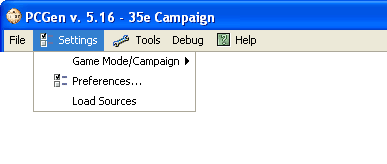

The Settings option is used to customize PCGen for the use of the user.
The Game Mode/Campaign menu is used to select what game mode you wish to create your character in. The game mode displayed is determined by what is in the campaign pcc file in the data sets (The menu will expand to the right displaying all current game modes).
The Preferences menu is used to set configurations of PCGen itself. This includes character generation options and more.
The Load Source option is used to select and load the gameMode and data sets to be used. This includes the ability to create and configure new Load Sets .